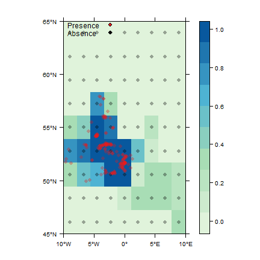
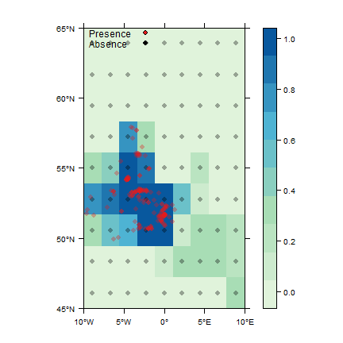
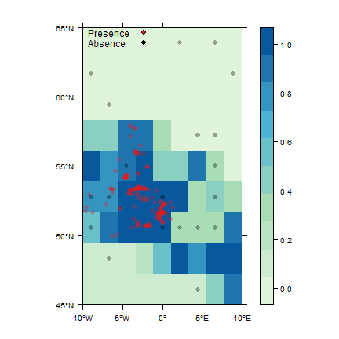
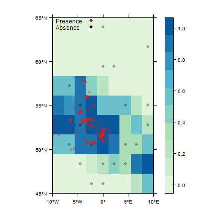
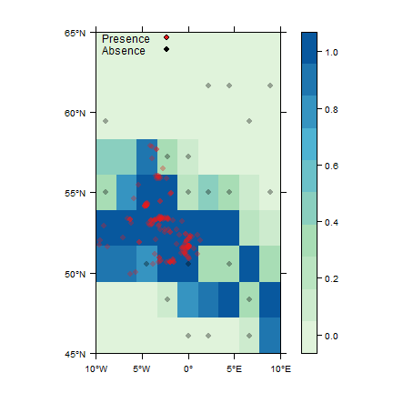
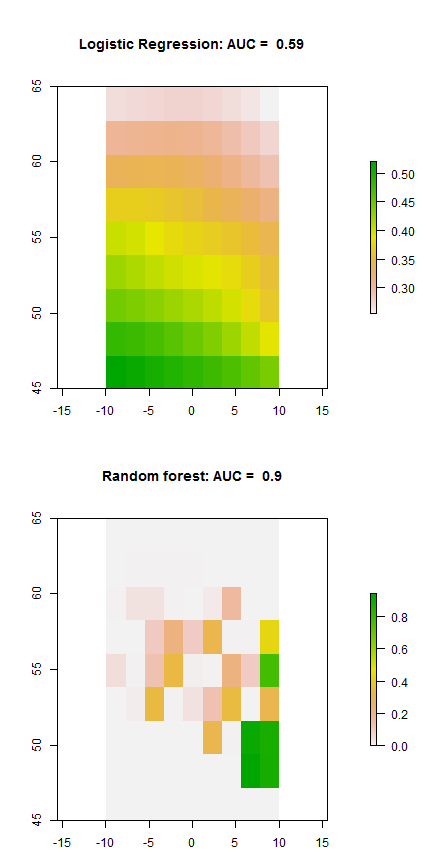

Basic zoon usage
Tim Lucas and Tom August
2016-11-23
An Introduction to the zoon package
zoon is a package to aid reproducibility and between-model comparisons in species distribution modelling. Each step in an analysis is a ‘module’. These modules will include:
- Data collections of occurrence and environmental covariate data from online databases or local files.
- Process steps such as removal of spatial autocorrelation in the data or generation of background pseudoabsences.
- The fitting of models.
- Model output including diagnostics, reports and vizualisation.
Getting set up
zoon is on CRAN and can be installed like this:
install.packages('zoon')Alternatively you can install the most up to date development version of zoon from Github:
library(devtools)
install_github('zoonproject/zoon')Then load the package:
library(zoon)Basic usage
A basic worklow is run using the workflow() function. We must chose a module for each type: occurrence, covariate, process, model and output.
work1 <- workflow(occurrence = UKAnophelesPlumbeus,
covariate = UKAir,
process = OneHundredBackground,
model = RandomForest,
output = PrintMap)class(work1)## [1] "zoonWorkflow"str(work1, 1)## List of 9
## $ occurrence.output:List of 1
## $ covariate.output :List of 1
## $ process.output :List of 1
## $ model.output :List of 1
## $ report :List of 1
## $ call : chr "workflow(occurrence = UKAnophelesPlumbeus, covariate = UKAir, process = OneHundredBackground, model = RandomForest, output = Pr"| __truncated__
## $ call.list :List of 5
## $ session.info :List of 7
## ..- attr(*, "class")= chr "sessionInfo"
## $ module.versions :List of 5
## - attr(*, "class")= chr "zoonWorkflow"In this case we are using the following modules which do the following things:
-
UKAnophelesPlumbeus: Uses occurrence points of Anopheles plumbeus in the UK collected from GBIF -
UKAir: Uses NCEP air temperature data for the UK -
OneHundredBackground: Randomly creates 100 pseudoabsence or background datapoints -
RandomForest: Run a random forest to model the relationship between Anopheles plumbeus and air temperature -
PrintMap: Predicts the model across the whole of the covariate dataset (UKAirin this case) and prints to graphics device.
The object returned from the workflow function (work1 in the above example) is an object of class zoonWorkflow. This object is a list with all the data, models and output we collected and created in our analysis.
To access the output of a particular part of the workflow you can use the accessor functions which have the same names as the module types. For example if you want the data returned from the occurrence module you can use the Occurrence() accessor function.
# Use the Occurrence function to get occurrence module
# output from the workflow object
occ_out <- Occurrence(work1)
head(occ_out)## longitude latitude value type fold
## 1 1.01287600 52.37696 1 presence 1
## 2 -0.16003467 51.57146 1 presence 1
## 3 -2.83497900 53.40813 1 presence 1
## 4 -0.62955210 51.55540 1 presence 1
## 5 -3.52534680 56.04848 1 presence 1
## 6 0.01144066 51.58168 1 presence 1To find out more about the elements returned from each module there is a summary at the start of the ‘Building a Module’ vignette. In this instance a data.frame is returned showing all of the occurrence data that is returned by the occurrence module.
Getting Help
To find a list of modules available on the online repository use:
GetModuleList()To find help on a specific module use
ModuleHelp(LogisticRegression)Note that you can’t use ? as the modules are held on a repository. Therefore the module documentation files are not included with the basic zoon install.
If you have used zoon in a publication you will need to cite zoon and the modules you have used. There are two different functions for doing this.
# For the zoon package
citation('zoon')
# For zoon modules
ZoonCitation('OptGRaF')More complex analyses
The syntax for including arguments to modules is simply ModuleName(parameter = 'value') like a standard function call in R. For example, to do two-fold crossvalidation we do:
work2 <- workflow(occurrence = UKAnophelesPlumbeus,
covariate = UKAir,
process = BackgroundAndCrossvalid(k = 2),
model = LogisticRegression,
output = PerformanceMeasures)## Occurrence data does not have a "crs" column, zoon will assume it is in the same projection as the covariate data## There are fewer than 100 cells in the environmental raster.
## Using all available cells (81) instead## Loading required package: SDMTools##
## Attaching package: 'SDMTools'## The following object is masked from 'package:raster':
##
## distanceHere we are providing an argument to the module BackgroundAndCrossvalid. We are setting k (the number of cross validation folds) to 2.
We are using an output module PerformanceMeasures which calculates a number of measures of the effectiveness of our model: AUC, kappa, sensitivity, specificity etc.
Multiple modules with Chain
We might want to combine multiple modules in our analysis. For this we use the function Chain().
work3 <- workflow(occurrence = UKAnophelesPlumbeus,
covariate = UKAir,
process = Chain(OneHundredBackground, Crossvalidate),
model = LogisticRegression,
output = PerformanceMeasures)## Occurrence data does not have a "crs" column, zoon will assume it is in the same projection as the covariate data## There are fewer than 100 cells in the environmental raster.
## Using all available cells (81) insteadHere we draw some pseudoabsence background points, and do crossvalidation (which is the same as work2, but explicitely using the separate modules.)
The effect of Chain() depends on the module type:
-
occurrence: All data from chained modules are combined. -
covariate: All raster data from chained modules are stacked. -
process: The processes are run sequentially, the output of one going into the next. -
model: Model modules cannot be chained. -
output: Each output module that is chained is run separately on the output from the other modules.
Chain() can be used on as many module type as is required.
Multiple modules with list
If you want to run separate analyses that can then be compared for example, specifiy a list of modules.
work4 <- workflow(occurrence = UKAnophelesPlumbeus,
covariate = UKAir,
process = OneHundredBackground,
model = list(LogisticRegression, RandomForest),
output = PrintMap)## Occurrence data does not have a "crs" column, zoon will assume it is in the same projection as the covariate data## There are fewer than 100 cells in the environmental raster.
## Using all available cells (81) instead 

str(work4, 1)## List of 9
## $ occurrence.output:List of 1
## $ covariate.output :List of 1
## $ process.output :List of 1
## $ model.output :List of 2
## $ report :List of 2
## $ call : chr "workflow(occurrence = UKAnophelesPlumbeus, covariate = UKAir, process = OneHundredBackground, model = list(LogisticRegression, "| __truncated__
## $ call.list :List of 5
## $ session.info :List of 7
## ..- attr(*, "class")= chr "sessionInfo"
## $ module.versions :List of 5
## - attr(*, "class")= chr "zoonWorkflow"Here, the analysis is split into two and both logistic regression and random forest (a machine learning algorithm) are used to model the data. Looking at the structure of the output we can see that the output from the first three modules are a list of length one. When the analysis splits into two, the output of the modules (in work4$model.output and work4$report) is then a list of length two. One for each branch of the split analysis.
Repeating a module multiple times
If you want to repeat a module multiple times you can use Replicate(). This can be useful when using modules that have a random process such as the creation of pseudoabsences.
work5 <- workflow(occurrence = UKAnophelesPlumbeus,
covariate = UKAir,
process = Replicate(Background(n = 20), n = 3),
model = RandomForest,
output = PrintMap)## Occurrence data does not have a "crs" column, zoon will assume it is in the same projection as the covariate data
Replicate() takes as its first argument the module you want to repeat and as its second argument the number of times yo want to repeat it. Here we end up running our model three times for three different sets out background points
Auxillary information in a ZoonWorkflow
A ZoonWorkflow object (such as work5 above), has a number of auxillary elements to help you interpret its contents.
# call gives the R call used to create the workflow
work5$call## [1] "workflow(occurrence = UKAnophelesPlumbeus, covariate = UKAir, process = Replicate(Background(n = 20), n = 3), model = RandomForest, output = PrintMap, forceReproducible = FALSE)"# session.info gives the session info when the
# workflow was created
work5$session.info## R version 3.3.2 (2016-10-31)
## Platform: x86_64-w64-mingw32/x64 (64-bit)
## Running under: Windows 7 x64 (build 7601) Service Pack 1
##
## locale:
## [1] LC_COLLATE=English_United Kingdom.1252
## [2] LC_CTYPE=English_United Kingdom.1252
## [3] LC_MONETARY=English_United Kingdom.1252
## [4] LC_NUMERIC=C
## [5] LC_TIME=English_United Kingdom.1252
##
## attached base packages:
## [1] stats graphics grDevices utils datasets methods base
##
## other attached packages:
## [1] SDMTools_1.1-221 randomForest_4.6-12 dismo_1.1-1
## [4] zoon_0.5.3 raster_2.5-8 sp_1.2-3
## [7] knitr_1.15
##
## loaded via a namespace (and not attached):
## [1] Rcpp_0.12.7 magrittr_1.5 roxygen2_5.0.1
## [4] munsell_0.4.3 colorspace_1.3-0 lattice_0.20-34
## [7] R6_2.2.0 highr_0.6 httr_1.2.1
## [10] stringr_1.1.0 plyr_1.8.4 tools_3.3.2
## [13] rgdal_1.2-4 grid_3.3.2 gtable_0.2.0
## [16] R.oo_1.21.0 assertthat_0.1 lazyeval_0.2.0
## [19] yaml_2.1.14 tibble_1.2 rfigshare_0.3.7
## [22] crayon_1.3.2 RJSONIO_1.3-0 ggplot2_2.2.0
## [25] R.utils_2.5.0 bitops_1.0-6 RCurl_1.95-4.8
## [28] testthat_1.0.2 evaluate_0.10 stringi_1.1.2
## [31] scales_0.4.1 R.methodsS3_1.7.1 XML_3.98-1.5
## [34] httpuv_1.3.3# module versions lists the modules used at each
# step and which version number they were
work5$module.versions## $occurrence
## [,1]
## module "UKAnophelesPlumbeus"
## version "1.0"
##
## $covariate
## [,1]
## module "UKAir"
## version "1.0"
##
## $process
## [,1] [,2] [,3]
## module "Background" "Background" "Background"
## version "1.1" "1.1" "1.1"
##
## $model
## [,1]
## module "RandomForest"
## version "1.0"
##
## $output
## [,1]
## module "PrintMap"
## version "1.1"When using lists in a workflow (as in work4 above) the workflow becomes forked. For example when work4 was created two models where run leading to two output maps. We can easily trace back the origins of any module output using the attribute call_path.
# work4 has two output maps, find the origins of the first
# using the Output accessor function and the call_path
# attribute
attr(Output(work4)[[1]], which = 'call_path')## $occurrence
## [1] "UKAnophelesPlumbeus"
##
## $covariate
## [1] "UKAir"
##
## $process
## [1] "OneHundredBackground"
##
## $model
## [1] "LogisticRegression"
##
## $output
## [1] "PrintMap"A larger example
Here is an example of a larger analysis.
work6 <- workflow(occurrence = Chain(SpOcc(species = 'Eresus kollari',
extent = c(-10, 10, 45, 65)),
SpOcc(species = 'Eresus sandaliatus',
extent = c(-10, 10, 45, 65))),
covariate = UKAir,
process = BackgroundAndCrossvalid(k = 2),
model = list(LogisticRegression,
RandomForest),
output = Chain(PrintMap(plot = FALSE),
PerformanceMeasures)
)## Loading required package: MASS##
## Attaching package: 'MASS'## The following objects are masked from 'package:raster':
##
## area, select## Loading required package: spocc## Occurrence data does not have a "crs" column, zoon will assume it is in the same projection as the covariate data## There are fewer than 100 cells in the environmental raster.
## Using all available cells (81) instead# Take a look at the structure of the workflow object
str(work6, 1)## List of 9
## $ occurrence.output:List of 1
## $ covariate.output :List of 1
## $ process.output :List of 1
## $ model.output :List of 2
## $ report :List of 4
## $ call : chr "workflow(occurrence = Chain(SpOcc(species = \"Eresus kollari\", extent = c(-10, 10, 45, 65)), SpOcc(species = \"Eresus san"| __truncated__
## $ call.list :List of 5
## $ session.info :List of 7
## ..- attr(*, "class")= chr "sessionInfo"
## $ module.versions :List of 5
## - attr(*, "class")= chr "zoonWorkflow"# Create some custom plots using the raster returned from
# the output module
par(mfrow = c(2,1), mar = c(3,4,6,4))
plot(Output(work6)[[1]],
main = paste('Logistic Regression: AUC = ',
round(Output(work6)[[2]]$auc, 2)),
xlim = c(-10, 10))
plot(Output(work6)[[3]],
main = paste('Random forest: AUC = ',
round(Output(work6)[[4]]$auc, 2)))
Here we are collecting occurrence data for two species, Eresus kollari and Eresus sandaliatus and combining them (having presumably decided that this is ecologically appropriate). We are using the air temperature data from NCEP again. We are sampling 100 pseudo absence points and running two fold crossvalidation.
We run logistic regression and random forest on the data separately. We then predict the model back over the extent of our environmental data and calculate some measures of how good the models are. Collating the output into one plot we can see the very different forms of the models and can see that the random forest has a higher AUC (implying it predicts the data better).